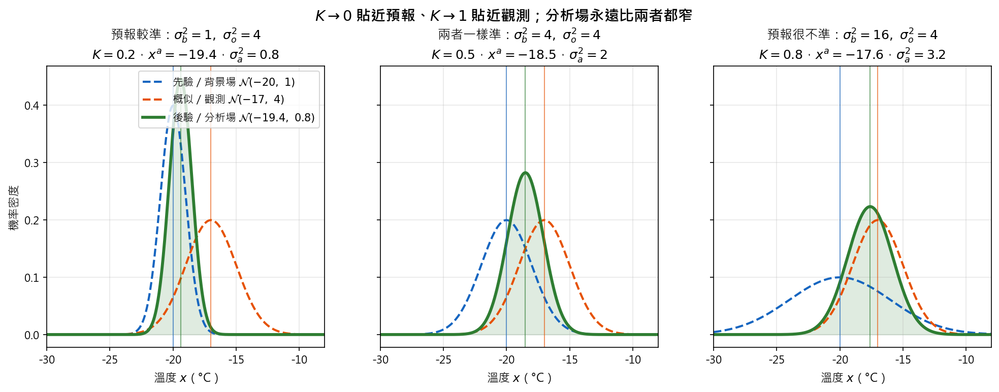

Data Assimilation as Bayes』 Theorem (資料同化：用觀測修正模式預報)#
1. Background (背景描述)#
數值天氣預報需要一個「現在大氣長什麼樣子」的初始條件，但我們手上有兩個都不完美的資訊來源：
模式預報（背景場）：昨天的預報積分到今天，涵蓋每個格點，但會有預報誤差。
觀測：探空、地面站、衛星等，比較直接，但有儀器誤差，而且只在少數位置。
**資料同化（Data Assimilation, DA）**的工作，就是把兩者合併成一個最佳估計（分析場），當作下一次預報的初始條件。
例子：模式預報某地 500 hPa 溫度約 \(-20^{\circ}\mathrm{C}\)，但當地探空讀到 \(-17^{\circ}\mathrm{C}\)。真實溫度應該是多少？要相信誰多一點？
用貝氏定理的語言：給定觀測讀值 \(y\)，想知道真實狀態 \(x\) 在哪裡，也就是求 \(f(x \mid y)\)。
2. Rule 101 (問題設定)#
變數定義#
符號 |
意義 |
|---|---|
\(x\) |
真實狀態（要估計的量），例如真實的 500 hPa 溫度 |
\(y\) |
觀測值，例如探空讀值 |
\(x^b, \sigma_b^2\) |
背景場（模式預報）與其誤差變異數 |
\(\sigma_o^2\) |
觀測誤差變異數 |
\(x^a, \sigma_a^2\) |
分析場（後驗平均）與其誤差變異數 |
貝氏定理的四個角色#
符號 |
統計學術語 |
資料同化對應 |
|---|---|---|
\(f(x)\) |
先驗 (A priori) |
背景場 (Background)：昨天的預報或歷史統計 |
\(f(y \mid x)\) |
概似 (Likelihood) |
觀測誤差 (Evidence uncertainty)：若真值是 \(x\)，儀器讀到 \(y\) 的機率 |
\(f(y)\) |
證據 (Evidence) |
觀測 (Obs.)：不論真值為何讀到 \(y\) 的總機率，與 \(x\) 無關的正規化常數 |
\(f(x \mid y)\) |
後驗 (A posteriori) |
分析場 (Analysis)：結合預報與觀測後的最佳估計 |
已知條件#
先驗（背景場）：預報誤差為高斯
概似（觀測）：觀測 = 真值 + 高斯雜訊
（探空儀誤差約 \(\pm 2^{\circ}\mathrm{C}\)，所以 \(\sigma_o = 2\)；這裡假設預報比探空準。）
背景誤差與觀測誤差互相獨立、無偏。
所求#
後驗 \(f(x \mid y)\) 的形式
分析場 \(x^a\)、分析誤差 \(\sigma_a^2\)、Kalman gain \(K\)
3. Solution: Gaussian × Gaussian (求解：高斯 × 高斯)#
3.1 後驗仍是高斯#
\(f(y)\) 與 \(x\) 無關，只需要 \(f(x \mid y) \propto f(y \mid x)\,f(x)\)。兩個高斯的指數相加後對 \(x\) 配方，結果仍是高斯（完整推導見 06_Gaussian_product_posterior.md）：
精度相加：
後驗平均是精度加權平均：
改寫成 Kalman 形式：
觀測的權重 \(\frac{1/\sigma_o^2}{1/\sigma_b^2 + 1/\sigma_o^2}\) 上下同乘 \(\sigma_b^2\sigma_o^2\)，就是 \(\frac{\sigma_b^2}{\sigma_b^2 + \sigma_o^2} = K\)。
3.2 代入數字#
Kalman gain：
分析場：
分析誤差：
用精度驗證：\(\dfrac{1}{\sigma_a^2} = \dfrac{1}{1} + \dfrac{1}{4} = 1.25 \Rightarrow \sigma_a^2 = 0.8\) ✔
結論：分析場 \(-19.4^{\circ}\mathrm{C}\)，比較靠近預報 \(-20^{\circ}\mathrm{C}\)，因為這裡預報誤差（\(\sigma_b^2 = 1\)）比觀測誤差（\(\sigma_o^2 = 4\)）小，預報較可信。

4. Review (復盤)#
4.1 Kalman gain 決定要相信誰#
情況 |
\(\sigma_b^2\) |
\(\sigma_o^2\) |
\(K\) |
\(x^a\) |
\(\sigma_a^2\) |
|---|---|---|---|---|---|
本題：預報較準 |
\(1\) |
\(4\) |
\(0.2\) |
\(-19.4\) |
\(0.8\) |
兩者一樣準 |
\(4\) |
\(4\) |
\(0.5\) |
\(-18.5\) |
\(2\) |
預報很不準 |
\(16\) |
\(4\) |
\(0.8\) |
\(-17.6\) |
\(3.2\) |

\(K \to 0\)（\(\sigma_o^2 \gg \sigma_b^2\)）：完全不依賴觀測，分析場 = 預報。
\(K \to 1\)（\(\sigma_b^2 \gg \sigma_o^2\)）：完全相信觀測，分析場 = 觀測。
\(K\) 只由兩邊的誤差大小決定，與讀值本身無關；讀值只決定「要往哪個方向修、修多少」的 \((y - x^b)\)。
4.2 精度相加：分析場永遠比兩者都準#
每個表格中的 \(\sigma_a^2\) 都比 \(\sigma_b^2\) 和 \(\sigma_o^2\) 小：多一個獨立的資訊來源，不確定性一定下降。
4.3 同一題的最佳化寫法：MAP 與 3D-Var#
不求整個後驗，只找讓後驗最大的 \(x\)（MAP）。取負對數：
令 \(\dfrac{dJ}{dx} = 0\) 就會得到同一個 \(x^a = x^b + K(y - x^b)\)。這就是一維的 3D-Var；推導見 hw3 Question 2。
4.4 從這一題推廣到實際的資料同化#
本題是最簡單的純量貝氏（一個點、一個變數、一次更新）。實際作業系統都是它的推廣：
方法 |
推廣了什麼 |
|---|---|
Kalman Filter |
在時間上重複：這次的分析場積分後成為下次的背景場 |
多變數 Kalman Filter |
\(\sigma_b^2 \to \mathbf{B}\)、\(\sigma_o^2 \to \mathbf{R}\)，加上觀測算子 \(\mathbf{H}\) |
3D-Var / 4D-Var |
最小化代價函數 \(J(\mathbf{x})\) 找 MAP |
EnKF |
用系集估計 \(\mathbf{B}\) |
詳見 00_Rule101.md §7。
4.5 用到的公式#
名稱 |
公式 |
|---|---|
連續貝氏定理 |
\(f(x \mid y) \propto f(y \mid x)\,f(x)\) |
精度相加 |
\(\dfrac{1}{\sigma_a^2} = \dfrac{1}{\sigma_b^2} + \dfrac{1}{\sigma_o^2}\) |
Kalman gain |
\(K = \dfrac{\sigma_b^2}{\sigma_b^2 + \sigma_o^2}\) |
分析場 |
\(x^a = x^b + K\,(y - x^b)\) |
分析誤差 |
\(\sigma_a^2 = (1 - K)\,\sigma_b^2\) |
代價函數 |
\(J(x) = \dfrac{(x - x^b)^2}{2\sigma_b^2} + \dfrac{(y - x)^2}{2\sigma_o^2}\) |